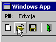
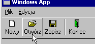
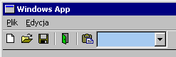

| << Toolbary, cz.1 Spis Strona g³ówna Toolbary, cz.3 >> |
Pewnie nie jesteœ zachwycony dotychczasowymi efektami? Toolbary w "profesjonalnych" aplikacjach wygl¹da³y jakoœ inaczej, no nie? Zgadza siê, w dzisiejszych czasach modne s¹ p³askie przyciski na toolbarach, trójwymiarowe nie s¹ ju¿ trendi ;-P. Zrobienie "p³askiego" toolbaru jest wrecz banalne, wystarczy dodaæ do stylów toolbaru sta³¹ TBSTYLE_FLAT. Wypuszcza ona powietrze z tych paskudnych, nadêtych przycisków i ju¿ wygl¹daj¹ one ca³kiem przyzwoicie:

Niestety, w Dev-ie jest drobna przeszkoda, która mo¿e nieco utrudniæ ustawienie wspomnianego stylu. Mianowicie plik nag³ówkowy commctrl.h z tego pakietu jest kompletnie skopany i praktycznie nie da siê go u¿ywaæ bez wprowadzenia do niego kilku w³asnorêcznych modyfikacji. Nie ma siê co ³amaæ, mo¿na dodaæ na poczatku programu jakieœ zaklêcie w rodzaju:
|
#ifndef TBSTYLE_FLAT #define TBSTYLE_FLAT 2048 #endif |
Poniewa¿ jednak nie jest to jedyna sta³a, której brakuje lub która jest Ÿle zdefiniowana, musimy przerobiæ ca³y nag³ówek. Nie martw siê, nie bêdziesz musia³ siê tym na razie mêczyæ - w dziale Download znajdziesz spakowany nag³ówek w wersji poprawionej przeze mnie. Nadal nie jest on do koñca sprawny, ale przynajmniej wszystkie rzeczy opisane w tym kursie bêdziesz móg³ skompilowaæ bez problemów.
Wracaj¹c do toolbaru... Istnieje mo¿liwoœæ utworzenia przezroczystego toolbaru, tj. samych przycisków, bez t³a. Tym razem ilustracji nie bêdzie, gdy¿ na szarym okienku taki toolbar wygl¹da dok³adnie tak samo, jak zwyk³y, ale gdybyœ kiedyœ robi³ program z piêknym bitmapowym t³em, mo¿e ci siê ten przezroczysty toolbarek przydaæ ;-). Wystarczy zamiast TBSTYLE_FLAT daæ TBSTYLE_TRANSPARENT.
Toolbar doœæ paskudnie wygl¹da, jeœli pozbawiony jest ramki. Mo¿esz j¹ dodaæ, ustawiaj¹c mu styl WS_BORDER. Powy¿szy screen przedstawia w³aœnie toolbar z ramk¹.
Przedstawiony powy¿ej toolbar wyœwietla same ikony, ale w wiêkszoœci wspó³czesnych aplikacji (w tym Dev-C++) mo¿esz siê spotkaæ równie¿ z przyciskami sk³adaj¹cymi siê i z tekstu, i z ikony. Zmajstrowanie takiego cuda nie jest szczególnie trudne. Wystarczy dodaæ odpowiednie napisy do wewnêtrznej listy stringów toolbaru, wysy³aj¹c komunikat TB_ADDSTRING:
| SendMessage(hToolbar, TB_ADDSTRING, 0, (LPARAM)"Nowy\0Otwórz\0Zapisz\0-\0Koniec\0"); |
Jak widaæ, poszczególne napisy musz¹ byæ rozdzielone znakami zerowymi, a na ich koñcu powinien znajdowaæ siê podwójny znak zerowy (tutaj widaæ tylko jeden, zgadnij dlaczego ;-)). Napisy te przekazujemy w parametrze lParam. Mo¿na równie¿ wykorzystaæ napisy zawarte w pliku zasobów, wtedy parametr wParam okreœla uchwyt programu, a lParam - identyfikator napisu w pliku. Teraz musimy jeszcze oczywiœcie poprzydzielaæ indeksy napisów na œwie¿o utworzonej liœcie odpowiednim przyciskom (czyli wype³niæ pole iString), co jednak w naszym przyk³adzie ju¿ zapobiegawczo zrobiliœmy na samym pocz¹tku ;-).

Istnieje mo¿liwoœæ przypisywania pojedynczych stringów do przycisku bez koniecznoœci dodawania ich do wewnêtrznej listy. Wystarczy zrobiæ takie ma³e "oszustwo" i podaæ adres bufora ze stringiem, zamiast indeksu do iString, np:
|
LPSTR buf = (LPSTR)GlobalAlloc(GMEM_FIXED, 100); LoadString(hThisInstance, IDS_NAPIS, buf, 100); tbb[0].iString = (int)buf; |
Ta metoda oczywiœcie pozwala tylko na dodawanie nowych przycisków. Co zrobiæ, jeœli chcemy zmieniæ napis ju¿ istniej¹cego przycisku? Otó¿ nowsze wersje biblioteki daj¹ nam w prezencie przydatny komunikat TB_SETBUTTONINFO. Pozwala on zmieniæ atrybuty przycisku w dowolnym momencie. Niestety, korzysta on z nieco innej struktury, ni¿ dotychczas omawiana TBBUTTON. Zmiana etykiety przycisku przy pomocy tego komunikatu bêdzie wygl¹da³a tak:
|
TBBUTTONINFO tbbi; ZeroMemory(&tbbi, sizeof(tbbi)); tbbi.cbSize = sizeof(tbbi); tbbi.dwMask = TBIF_TEXT; tbbi.pszText = "To ju¿ jest koniec"; SendMessage(hToolbar, TB_SETBUTTONINFO, TOOL_KONIEC, (LPARAM)&tbbi); |
W sumie nie ma tutaj co omawiaæ; przerabialiœmy podobne rzeczy ju¿ tysi¹ce razy. Pole dwMask okreœla, których z pozosta³ych pól struktury u¿ywamy. Potrzebujemy tylko ustawiæ pole pszText, wiêc do dwMask wpisujemy sta³¹ TBIF_TEXT. W samym komunikacie TB_SETBUTTONINFO przekazujemy wskaŸnik do struktury jako lParam, oraz identyfikator zmienianego przycisku jako wParam. My zmieniamy przycisk TOOL_KONIEC. Oczywiœcie tak d³ugi tekst, jak tutaj podaliœmy, nie zmieœci siê na przycisku, wiêc bêdziemy musieli go jeszcze rozszerzyæ (ustawiaj¹c dodatkowo pole cx struktury TBBUTTONINFO), ale to ju¿ twoja praca domowa (albo zajrzyj na koniec tej strony ;-) ).
Mo¿esz równie¿ sprawiæ, ¿eby tekst wyœwietlany by³ nie pod spodem, ale obok ikony. Odpowiada za to styl TBSTYLE_LIST.
Wiele programów (np. Internet Explorer) ma takie fajne przyciski ze strza³eczk¹ obok. Jeœli j¹ nacisn¹æ, pojawia siê dodatkowe menu. My te¿ mo¿emy sobie taki przycisk zrobiæ, a co. Niech bêdzie to przycisk Importuj (jeœli nie wiesz o co chodzi - zajrzyj do odcinka o menu). Bêdzie on rozwija³ to samo podmenu, które pojawia siê po najechaniu na pozycjê menu "Importuj".
Przede wszystkim potrzebny nam przycisk ze stylem TBSTYLE_DROPDOWN (lub BTNS_DROPDOWN, dla wy¿szych wersji biblioteki). Tak wiêc wype³nianie odpowiedniego pola struktury TBBUTTON (ca³oœci nie podajê, bo ju¿ to przerabialiœmy ;-)) powinno wygl¹daæ mniej wiêcej w ten sposób:
|
tbb[1].fsStyle = TBSTYLE_BUTTON | TBSTYLE_DROPDOWN; |
Samo to szczêœcia nam nie da, bo trzeba jeszcze wyprodukowaæ strza³kê. W tym celu musimy ustawiæ rozszerzony styl TBSTYLE_EX_DRAWDDARROWS. Niestety, nie jest to takie proste jak w przypadku "zwyk³ych" stylów - robi siê to przez oddzielny komunikat, TB_SETEXTENDEDSTYLE:
| SendMessage(hToolbar, TB_SETEXTENDEDSTYLE, 0, TBSTYLE_EX_DRAWDDARROWS); |
Dziêki temu eksperymentowi powinniœmy ju¿ otrzymaæ gotowy przycisk ze strza³k¹. Teraz trzeba tak pokombinowaæ, ¿eby po klikniêciu na strza³kê pojawia³o siê menu. Tutaj czeka nas d³u¿sza gimnastyka. Zak³adamy, ¿e g³ówne menu programu ju¿ mamy gotowe (ze wspomnianego odcinka kursu...), wiêc mo¿emy skorzystaæ z funkcji GetSubMenu, aby pobraæ uchwyt do tego fragmentu menu, który nas interesuje, a nastêpnie wyœwietliæ je za pomoc¹ TrackPopupMenu.
Jak wykryæ, ¿e naciœniêto strza³kê obok przycisku, a nie sam przycisk? Otó¿ wysy³ane jest wówczas powiadomienie TBN_DROPDOWN. Powiadomienie, a nie komunikat! I tutaj przyda³aby siê ma³a dygresja na temat powiadomieñ. Ka¿de powiadomienie wysy³ane jest jako komunikat WM_NOTIFY. ¯eby rozró¿niæ, jakie konkretnie jest to powiadomienie (jest ich wiele rodzajów, podobnie jak ze "zwyk³ymi" komunikatami) i od jakiej kontrolki pochodzi, musimy siê bli¿ej zainteresowaæ parametrem lParam komunikatu WM_NOTIFY. Jest w nim przekazywany wskaŸnik do struktury, która zawiera wszystkie potrzebne nam informacje. Typ struktury zale¿y od rodzaju powiadomienia, np. w przypadku toolbaru bêdzie to struktura NMTOOLBAR. Generalnie obs³uga powiadomieñ mo¿e wygl¹daæ mniej wiêcej tak:
|
case WM_NOTIFY: { LPNMHDR lpn = (LPNMHDR)lParam; LPNMTOOLBAR lpnTB = (LPNMTOOLBAR)lParam; switch(lpn->code) { case TBN_DROPDOWN: { return FALSE; } //obs³uga innych powiadomieñ //... default: break; } } break; |
Typ LPNMTOOLBAR to wskaŸnik na strukturê typu NMTOOLBAR. Jedno z pól tej struktury (a konkretnie jej pierwsze pole) jest typu NMHDR (skrót od Notification Message Header). Pe³ni ona rolê nag³ówka powiadomienia. Pole code tej struktury zawiera kod powiadomienia i w naszym przypadku powinno byæ równe TBN_DROPDOWN. Na razie nie bêdziemy obs³ugiwali innych powiadomieñ. Moglibyœmy jeszcze wykorzystaæ pola hwndFrom i idFrom struktury NMHDR, ¿eby sprawdziæ, czy powiadomienie faktycznie pochodzi od toolbaru, ale odpuœæmy sobie takie detale ;-).
Pewnie siê zastanawiasz, dlaczego jeden parametr lParam przekonwertowaliœmy na dwa rodzaje struktur i czy to przypadkiem nie pomy³ka. Bynajmniej. WskaŸnik zawarty w lParam wskazuje na strukturê typu NMTOOLBAR, ale na samym poczatku tej struktury znajduje siê (jak ju¿ wspomnieliœmy) nag³ówek typu NMHDR, wiêc mo¿emy wskaŸnik ten przerobiæ na LPNMHDR. Robimy to dla czystej wygody, dziêki temu piszemy po prostu lpn->code zamiast lpnTB->hdr.code, co przy pisaniu bardziej skomplikowanej obs³ugi powiadomieæ mo¿e siê okazaæ b³ogos³awionym rozwi¹zaniem ;-).
Zajmijmy siê teraz wyœwietlaniem naszego menu. Najpierw pobieramy i zapamiêtujemy w jakiejœ zmiennej uchwyt do podmenu Importuj (pamiêtaj¹c o tym, ¿eby sobie takie menu utworzyæ wczeœniej w pliku zasobów):
|
HMENU hPopupMenu; hPopupMenu = GetSubMenu(hMenu, 0); |
Mamy ju¿ odpowiedni uchwyt, pozostaje siê tylko zastanowiæ, w którym miejscu wyœwietliæ. Najlepiej by³oby tu¿ pod przyciskiem. Tak wiêc musimy pobraæ wspó³rzêdne tego¿ przycisku:
|
RECT rc; SendMessage(lpn->hwndFrom, TB_GETITEMRECT, (WPARAM)lpnTB->iItem, (LPARAM)&rc); |
Otrzymane wspó³rzêdne s¹ wzglêdne - punkt (0,0) to lewy górny róg obszaru klienta. Musimy je zatem przekonwertowaæ na wspó³rzêdne ekranowe. Robiliœmy to ju¿ we wczeœniejszych odcinkach kursu z punktami, ale teraz mamy ca³y prostok¹t, wiêc najproœciej bêdzie u¿yæ funkcji MapWindowPoints (która potrafi konwertowaæ ca³¹ tablicê punktów na raz, a przecie¿ prostok¹t to w³aœnie tablica 2 punktów). Nie bêdziemy jej dok³adniej omawiaæ, zobaczymy tylko gotowy przyk³ad:
|
MapWindowPoints(lpn->hwndFrom, HWND_DESKTOP, (LPPOINT)&rc, 2); |
Teraz tylko wyœwietliæ menu. Mo¿emy to zrobiæ funkcj¹ TrackPopupMenu albo TrackPopupMenuEx. Poniewa¿ zaœ lubimy wyzwania... No dobra, nie bij, ta druga funkcja ma pewn¹ zaletê - mo¿emy jej podaæ obszar ekranu, którego menu nie powinno przys³oniæ. Jak siê pewnie domyœlasz, obszarem tym bêdzie nasz przycisk. W dodatku TrackPopupMenuEx przyjmuje mniej argumentów (!).
|
TPMPARAMS tpm; tpm.cbSize = sizeof(TPMPARAMS); tpm.rcExclude = rc; TrackPopupMenuEx(hPopupMenu, TPM_LEFTALIGN | TPM_LEFTBUTTON | TPM_VERTICAL, rc.left, rc.bottom, hwnd, &tpm); |
Jak widzimy, funkcja korzysta z nowej struktury (hurrra :-]) - TPMPARAMS, okreœlaj¹cej rozszerzone parametry. W³aœnie do tej struktury wpisujemy wspó³rzêdne naszego prostok¹ta. Oprócz tego wyœwietlamy menu w ten sposób, ¿e jego lewy górny róg bêdzie siê znajdowa³ tu¿ pod przyciskiem. W porównaniu do TrackPopupMenu, w "wersji rozszerzonej" mo¿emy jeszcze u¿yæ (i u¿ywamy ;-) ) dodatkowej flagi - TBM_VERTICAL, która podpowiada systemowi, co zrobiæ w sytuacji, gdyby zabrak³o miejsca na ekranie do wyœwietlenia menu.

Có¿ to znowu za czort? Ano, hot-tracking oznacza podœwietlanie (lub oznaczanie w innych sposób) kontrolek, na które najedziemy mysz¹. Co prawda w naszym toolbarze mamy to ju¿ zaimplementowane automatycznie (odk¹d go sp³aszczyliœmy ;-) ), ale teraz dowiemy siê jeszcze, co zrobiæ by dodatkowo po najechaniu zmienia³a siê bitmapa przycisku.
Toolbar mo¿e miec przypisane trzy listy obrazków. Jedna z nich odpowiada za domyœlny wygl¹d ikon, druga - za wygl¹d ikon, na które najechano strza³k¹, trzecia - za wygl¹d nieaktywnych (wy³¹czonych) przycisków. Do przypisywania toolbarowi tych list s³u¿¹ specjalne komunikaty, odpowiednio: TB_SETIMAGELIST, TB_SETHOTIMAGELIST, TB_SETDISABLEDIMAGELIST. W parametrze lParam tych komunikatów powinniœmy przekazaæ uchwyt do listy obrazków.
Zanim zastanowimy siê, jak uzyskaæ ten uchwyt, musimy dokonaæ drobnego spostrze¿enia: toolbar mo¿e mieæ a¿ trzy listy obrazków na raz, ale ka¿dy przycisk mo¿e mieæ przypisany tylko jeden indeks bitmapy w danym momencie. Oznacza to, ¿e nie mo¿emy robiæ hot-trackingu wybiórczo - albo wszystkie przyciski na toolbarze go obs³uguj¹, albo ¿aden. Jeœli zdecydujemy siê na to pierwsze, to musimy zrobiæ po dwie (lub trzy) bitmapy dla ka¿dego przycisku, tak aby ikony odpowiednich przycisków znajdowa³y siê w obu (lub trzech) bitmapach w TEJ SAMEJ KOLEJNOŒCI, a nastêpnie dodaæ te bitmapy do dwóch (trzech) list i przypisaæ listy do toolbaru.
Jak tworzymy listê obrazków? Mamy do tego funkcjê ImageList_Create. Bli¿szego omawiania nie bêdzie; zbyt leniwy jestem na to ;-). Pierwsze dwa argumenty to wymiary pojedynczej ikony, a trzeci oznacza g³êbokoœæ koloru (wspólna dla ca³ej listy), np. ILC_COLOR8, ILC_COLOR24. Pozosta³e argumenty nie maj¹ dla nas wiêkszego znaczenia. Zwracana wartoœæ jest typu HIMAGELIST, wiêc powinniœmy sobie wczeœniej utworzyæ zmienn¹ tego typu:
|
HIMAGELIST himlDef, himlHot; himlDef = ImageList_Create(16,16,ILC_COLOR24,0,1); himlHot = ImageList_Create(16,16,ILC_COLOR24,0,1); |
Wczytywaæ bitmapy ju¿ dawno umiemy (prawda?), wiêc nie bêdziemy siê powtarzaæ; zak³adamy, ¿e mamy ju¿ gotowe uchwyty do bitmap hbmDef i hbmHot, które mo¿emy teraz dodaæ do odpowiednich list. Bitmapa o uchwycie hbmDef powinna zawieraæ czarno-bia³e obrazki, hbmHot - w kolorze. Do dodawania s³u¿y funkcja ImageList_Add, ale jeszcze lepiej jest u¿yæ ImageList_AddMasked, która przy okazji wykona za nas "usuwanie" niepotrzebnego t³a z bitmapy:
|
ImageList_AddMasked(himlDef, hbmDef, RGB(192,192,192)); ImageList_AddMasked(himlHot, hbmHot, RGB(192,192,192)); |
Teraz mo¿emy za pomoc¹ wspomnianych ju¿ wy¿ej komunikatów przypisaæ stworzone i wype³nione przed chwil¹ listy obrazków do odpowiednich toolbarów:
|
SendMessage(hToolbar, TB_SETIMAGELIST, 0, (LPARAM)himlDef); SendMessage(hToolbar, TB_SETHOTIMAGELIST, 0, (LPARAM)himlHot); |
Zak³adaj¹c, ¿e ju¿ wczeœniej ponadawaliœmy przyciskom odpowiednie indeksy, otrzymujemy toolbar z czarno-bia³ymi przyciskami, które dopiero po "podœwietleniu" staj¹ siê kolorowe:

Nie zapomnij o zwolnieniu zasobów. Listy obrazków niszczymy za pomoc¹ ImageList_Destroy, podaj¹c jako argument uchwyt do niszczonej listy. Bitmapy, przypominam, usuwamy za pomoc¹ DeleteObject.
Podpowiedzi, wskazówki, z angielska tooltips, to te œmieszne etykietki, zwykle na ¿ó³tym tle, które pojawiaj¹ siê po najechaniu kursorem myszy na jakiœ istotny element interfejsu i zatrzymaniu go przez jakiœ czas (zwykle oko³o sekundy). S¹ one przydatne w przypadku ka¿dej kontrolki, ale najwiêksze chyba znaczenie maj¹ w³aœnie przy toolbarach, których przyciski czêsto nie posiadaj¹ widocznych podpisów, a nie zawsze przecie¿ ikonka potrafi nam zasugerowaæ dok³adne znaczenie danego przycisku ;-).
Zanim zaczniesz siê biedziæ nad tooltipami, ponadawaj przyciskom unikalne identyfikatory (idCommand), w przeciwnym razie tooltipy bêd¹ b³êdnie wyœwietlane.
Najprostszym sposobem na ustawienie tooltipów jest... ustawienie tekstu na przycisku, co ju¿ zrobiliœmy. Jeœli ustawimy tekst, ale jednoczeœnie go ukryjemy, to bêdzie on wyœwietlany jako tooltip. Tylko jak to zrobiæ? Jedna z metod (chyba najprostsza) to ustawienie toolbarowi stylów TBSTYLE_TOOLTIP i TBSTYLE_LIST (koniecznie obydwa!). Ponadto ustawiamy jeszcze rozszerzony styl TBSTYLE_EX_MIXEDBUTTONS (ten ostatni oczywiœcie przez wys³anie odpowiedniego komunikatu - patrz wy¿ej).
Jeœli toolbar ma ustawiony styl TBSTYLE_EX_MIXEDBUTTONS, to tekst na przyciskach nie jest wyœwietlany jako etykieta (chyba, ¿e dany przycisk ma ustawiony styl BTNS_SHOWTEXT), a najwy¿ej jako tooltip:

A co zrobiæ, ¿eby wyœwietliæ w tooltipie inny tekst, ni¿ etykieta przycisku? To ju¿ wymaga nieco wiêcej zachodu. Trzeba odpowiedzieæ na powiadomienie TTN_GETDISPINFO, które wysy³ane jest przez toolbar do okna rodzicielskiego. W parametrze lParam dostajemy wtedy wskaŸnik do struktury typu TOOLTIPTEXT, która zawiera nag³ówek (typu NMHDR, oczywiœcie), pozwalaj¹cy nam zorientowaæ siê, którego dok³adnie przycisku dotyczy dane powiadomienie. W strukturze tej wystêpuje równie¿ pole lpszText, do którego musimy wpisaæ tekst tooltipa. Oto przyk³ad odpowiedzi na to powiadomienie, w której to odpowiedzi ustawiamy tekst dwóch z naszych przycisków:
|
case TTN_GETDISPINFO: { LPTOOLTIPTEXT lpttt = (LPTOOLTIPTEXT)lParam; switch(lpttt->hdr.idFrom) { case TOOL_NOWY: lpttt->lpszText = "Tworzy nowy plik"; break; case TOOL_OTWORZ: lpttt->lpszText = "Otwiera istniej¹cy plik"; break; } } break; |
Dziêki tej pisaninie mo¿emy wyœwietlaæ w tooltipach co chcemy, a etykiety zostawiæ w spokoju. Wtedy mo¿liwe jest ustawienie krótkich etykiet typu Nowy, Zapisz itp., oraz nieco d³u¿szych tooltipów, dok³adniej objaœniaj¹cych funkcjê danego przycisku:

Na koniec dowiemy siê, jak wstawiæ do toolbaru inn¹ kontrolkê. Mog³eœ siê z tym spotkaæ np. w edytorach tekstu, gdzie na toolbarach jest zwykle ComboBox z wyborem czcionek; zaraz zajmiemy siê wstawieniem takiego w³aœnie ComboBoxa (ale bez czcionek ;-)).
Najpierw trzeba na toolbarze zrobiæ trochê miejsca. Mo¿emy wstawiæ do niego nowy separator i rozszerzyæ go do tylu pikseli, ile ma mieæ nasz ComboBox. Separator ten nie bêdzie i tak widoczny zza ComboBoxa. Zdefiniujemy te¿ sobie identyfikator dla tego separatora, a tak¿e dla ComboBoxa. No to do dzie³a:
|
#define TOOL_PLACEHOLDER 7 #define IDC_COMBOBOX 501 HWND g_hCombo; int szerokosc = 100; TBBUTTON tbb3[1]; ZeroMemory(tbb3, sizeof(tbb3)); tbb3[0].idCommand = TOOL_PLACEHOLDER; tbb3[0].fsState = TBSTATE_ENABLED; tbb3[0].fsStyle = TBSTYLE_SEP; SendMessage(hToolbar, TB_ADDBUTTONS, 1, (LPARAM)&tbb3); |
"Separator" ju¿ jest, ale ma za ma³e wymiary - kontrolka nam siê nie zmieœci. Trzeba rozszerzyæ. Wykorzystamy omówion¹ niedawno strukturê TBBUTTONINFO, by dzie³a tego dokonaæ:
|
TBBUTTONINFO tbbi; ZeroMemory(&tbbi, sizeof(tbbi)); tbbi.cbSize = sizeof(tbbi); tbbi.dwMask = TBIF_SIZE; tbbi.cx = szerokosc; SendMessage(hToolbar, TB_SETBUTTONINFO, TOOL_PLACEHOLDER, (LPARAM)&tbbi); |
Potrzebujemy teraz wymiarów rozci¹gniêtego w³aœnie "separatora". Pobierzemy je znanym ju¿ komunikatem TB_GETITEMRECT i wykorzystamy do stworzenia ComboBoxa. Aby ComboBox zosta³ utworzony na toolbarze, toolbar musi byæ rodzicem ComboBoxa. Jednak na razie jako uchwyt rodzica podamy hwnd, czyli nasze g³ówne okno - dlaczego, zaraz siê wyjaœni.
|
RECT rc; SendMessage(hToolbar, TB_GETITEMRECT, TOOL_PLACEHOLDER, (LPARAM)&rc); g_hCombo = CreateWindowEx(0L, "COMBOBOX", NULL, WS_CHILD | WS_BORDER | WS_VISIBLE | CBS_DROPDOWN, rc.left, rc.top, rc.right-rc.left, rc.bottom-rc.top, hwnd, (HMENU)IDC_COMBOBOX, hThisInstance, 0); |
ComboBox ju¿ gotowy, ale aby pojawi³ siê na toolbarze, musimy mu jeszcze zmieniæ rodzica. Proces adopcyjny jest bardzo prosty i nie bêdziemy musieli nawet biegaæ po s¹dach, wystarczy wywo³aæ SetParent:
|
SetParent(g_hCombo, hToolbar); |
Dlaczego stworzyliœmy bachora, a potem przenieœliœmy go do rodziny zastêpczej? Nie wygodniej by by³o od razu utworzyæ go z rodzicem hToolbar? Otó¿ na pewno by³oby mniej roboty, ale wtedy drañ wysy³a³by wszystkie komunikaty do toolbaru, a nie do okna g³ównego, czyli bez zastosowania subclassingu by³yby one dla nas nieprzydatne (nie moglibyœmy obs³ugiwaæ zdarzeñ zwi¹zanych z ComboBoxem). Tymczasem dziêki tej sztuczce wszystko gra jak w zegarku:

| << Toolbary, cz.1 Spis Strona g³ówna Toolbary, cz.3 >> |